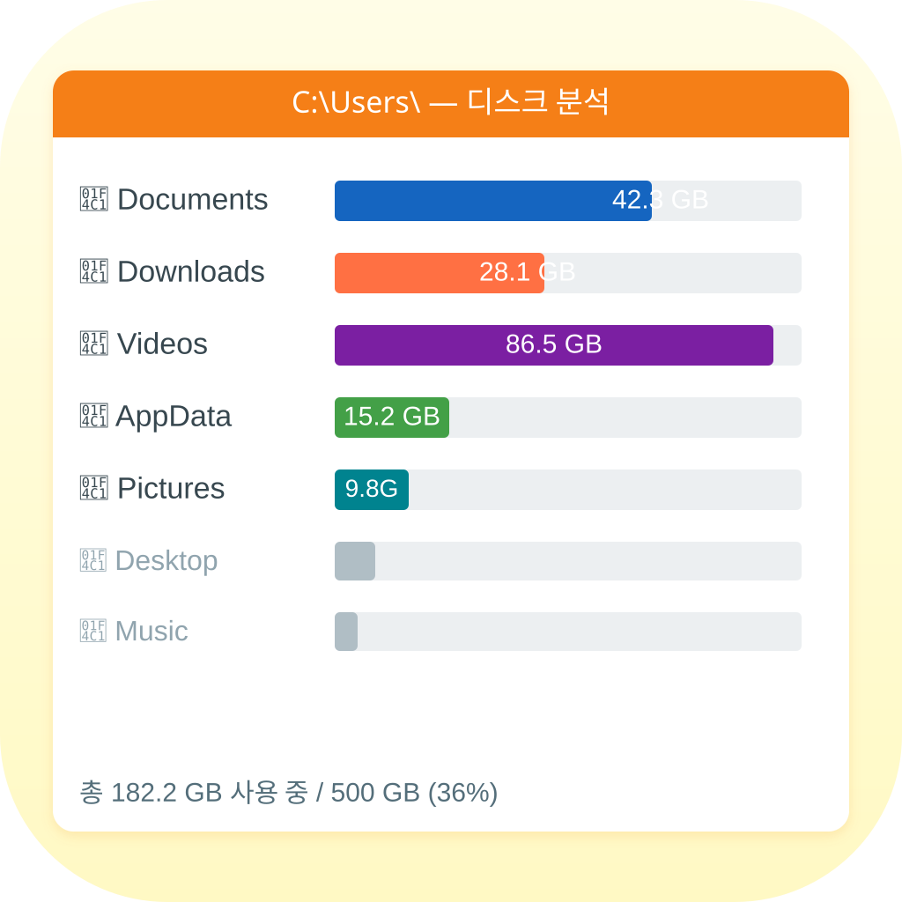
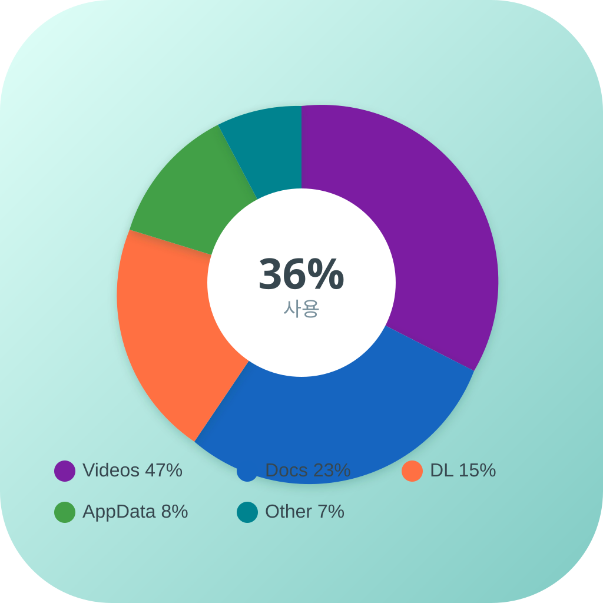
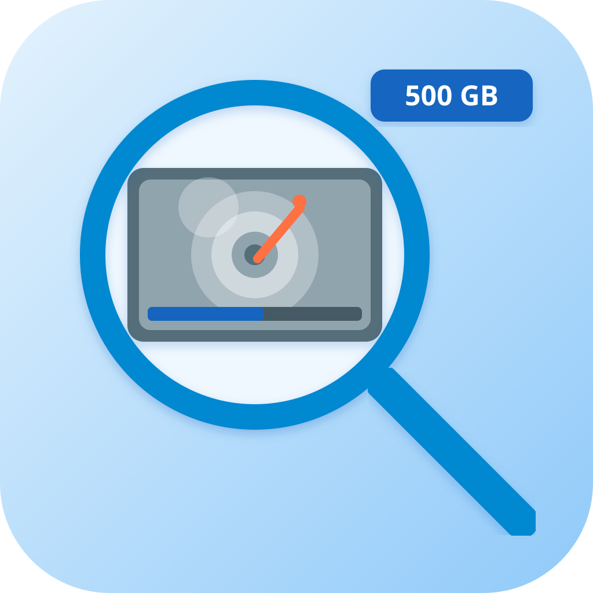
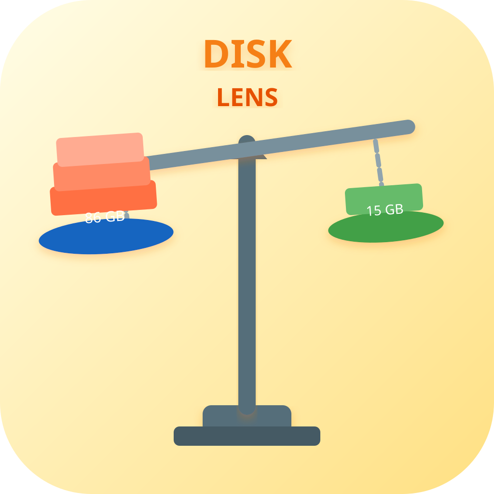
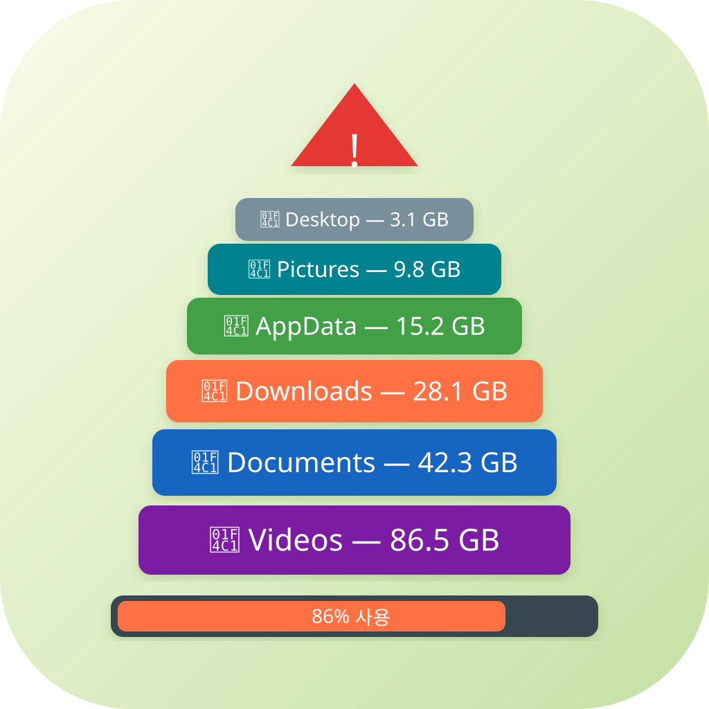
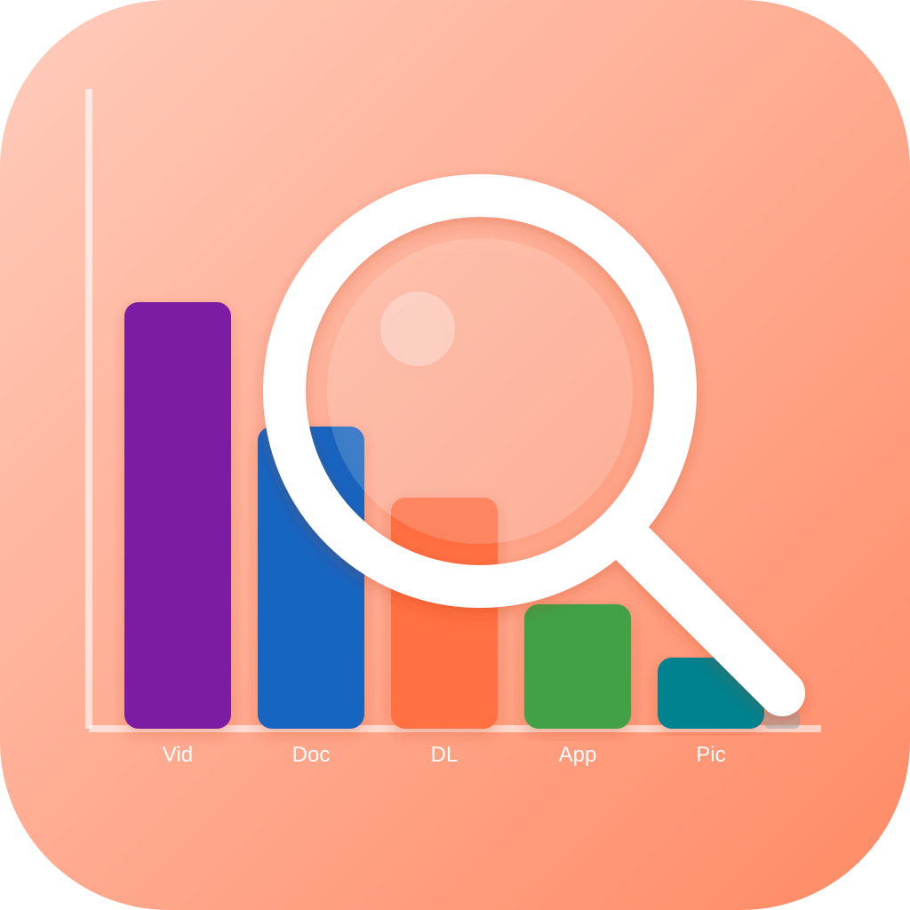

icon_01
literal폴더 크기 막대 그래프
(Documents/Downloads/Videos)

icon_02
literal도넛 파이 차트
(디스크 사용량 시각화)

icon_03
metaphor돋보기(Lens) 안에
하드 드라이브 — X선 은유

icon_04
metaphor저울 — 폴더 크기를
측정하는 은유

icon_05
metaphor폴더 블록이 탑처럼 쌓인
디스크 포화 경고 은유

icon_06
hybrid막대 그래프 + 돋보기
— 디스크 분석 hybrid